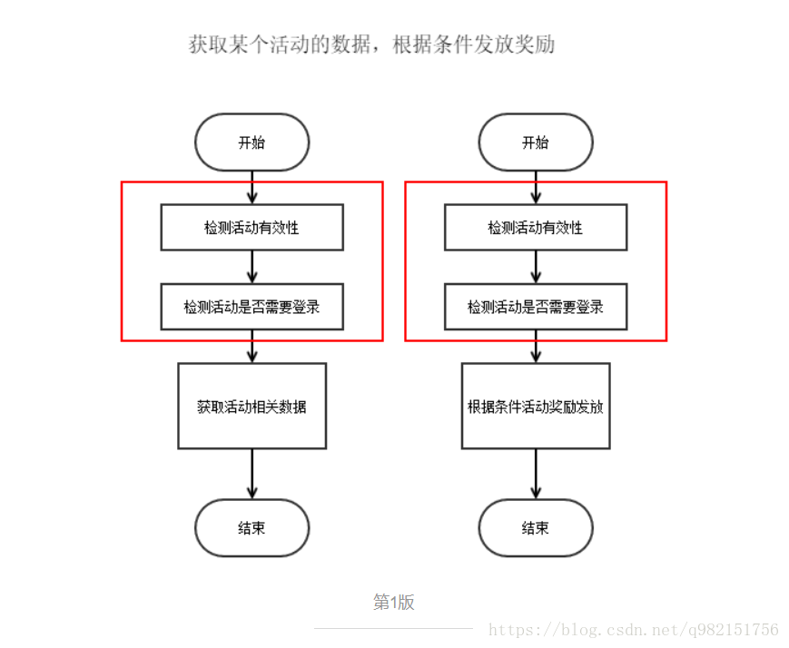
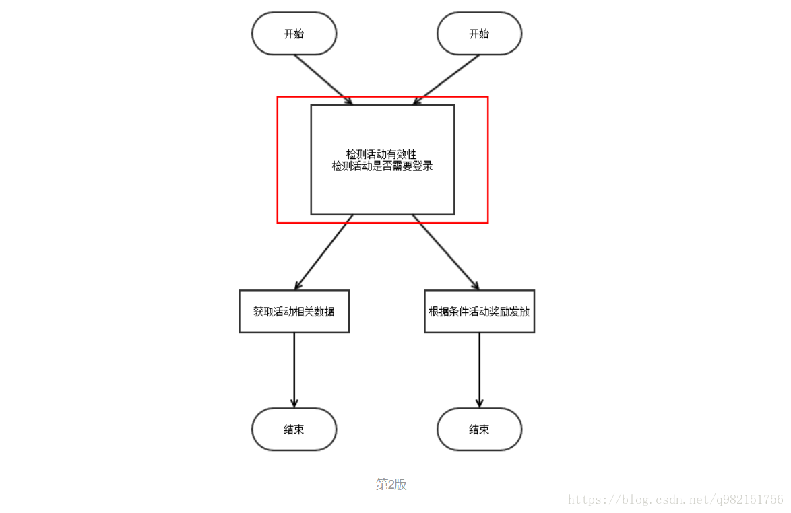
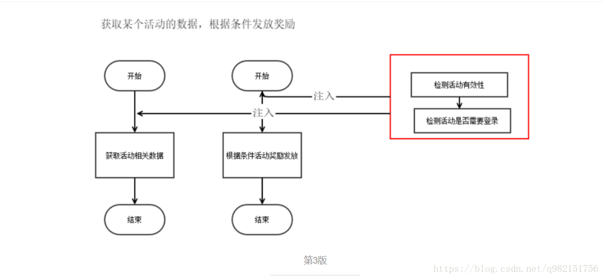
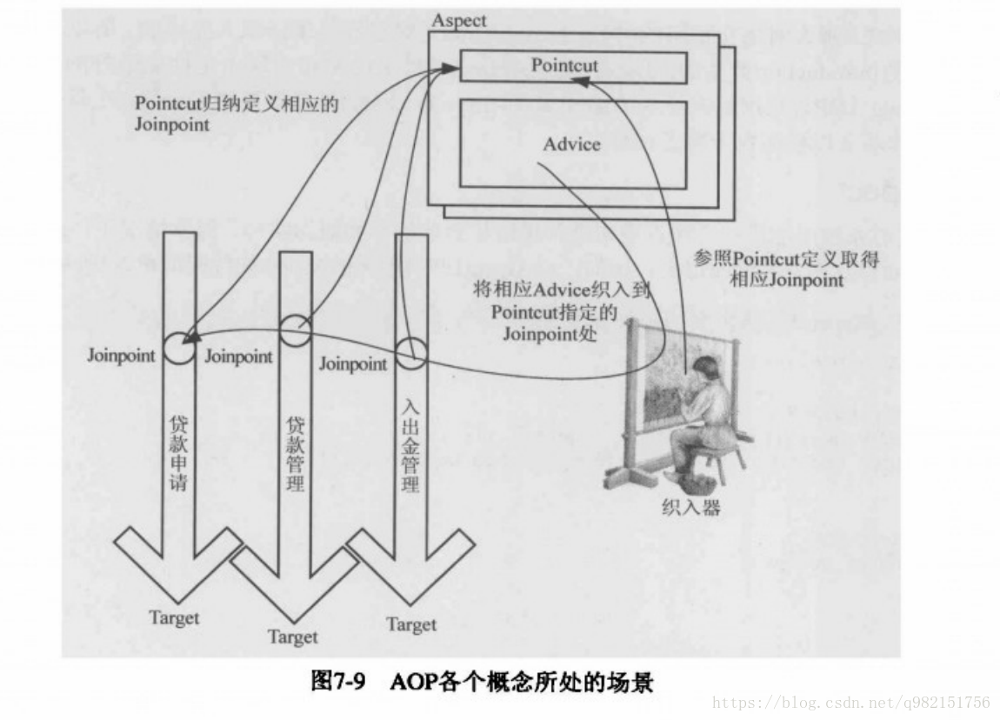
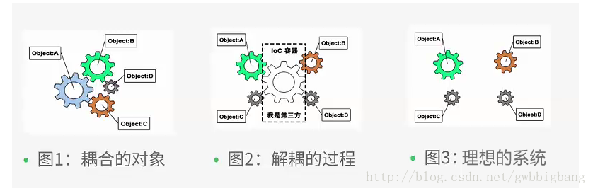
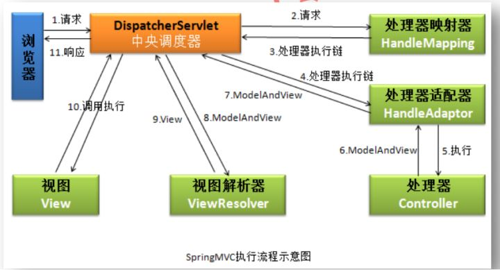
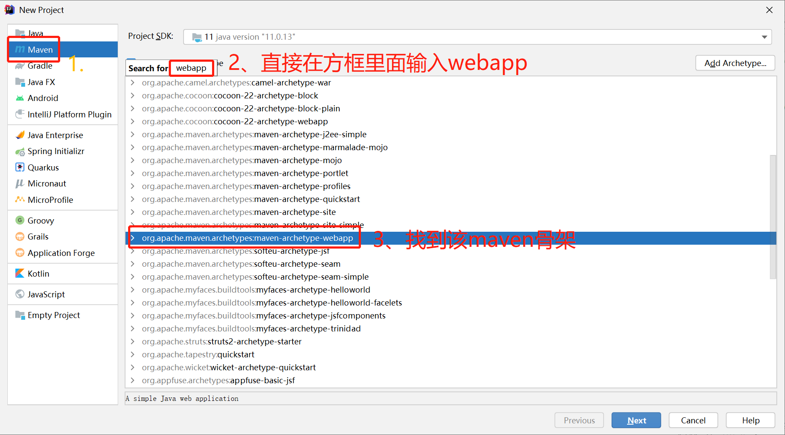
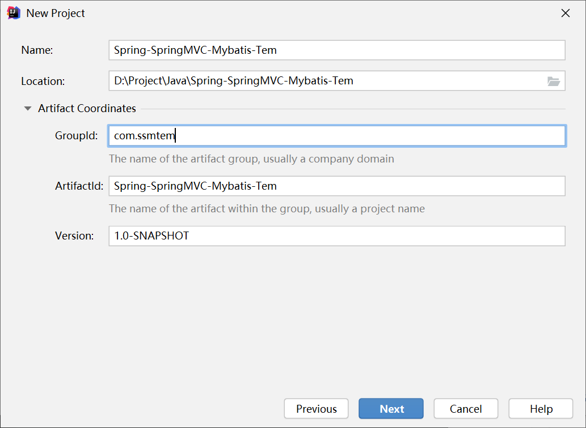
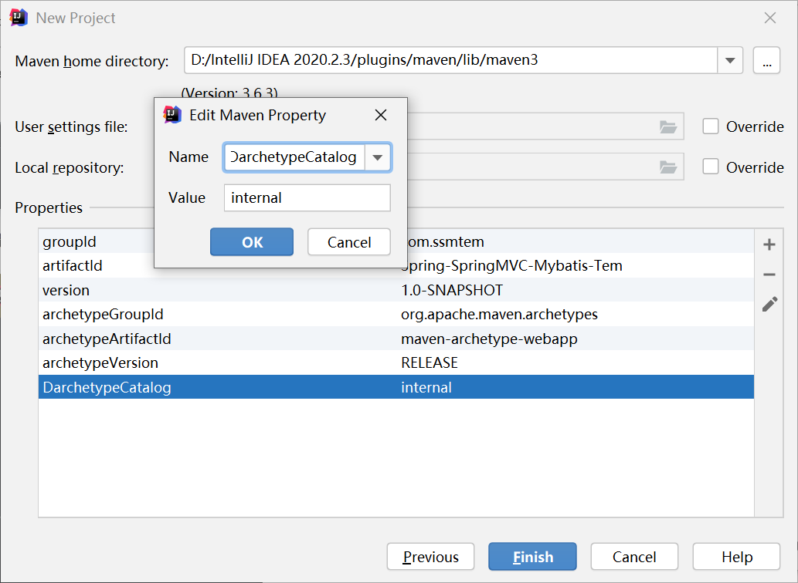

SSM框架整合大全
本篇篇幅较长，建议读者找准阅读本篇文章的着重点
简介
SSM（Spring+SpringMVC+MyBatis）框架集由Spring、MyBatis两个开源框架整合而成（SpringMVC是Spring中的部分内容），常作为数据源较简单的web项目的框架。
Spring
Spring就像是整个项目中装配bean的大工厂，在配置文件中可以指定使用特定的参数去调用实体类的构造方法来实例化对象。也可以称之为项目中的粘合剂。
Spring的核心思想是IoC（控制反转），即不再需要程序员去显式地new一个对象，而是让Spring框架帮你来完成这一切。
SpringMVC
SpringMVC在项目中拦截用户请求，它的核心Servlet即DispatcherServlet承担中介或是前台这样的职责，将用户请求通过HandlerMapping去匹配Controller，Controller就是具体对应请求所执行的操作。SpringMVC相当于SSH框架中struts。
mybatis
mybatis是对jdbc的封装，它让数据库底层操作变的透明。mybatis的操作都是围绕一个sqlSessionFactory实例展开的。mybatis通过配置文件关联到各实体类的Mapper文件，Mapper文件中配置了每个类对数据库所需进行的sql语句映射。在每次与数据库交互时，通过sqlSessionFactory拿到一个sqlSession，再执行sql命令。
页面发送请求给控制器，控制器调用业务层处理逻辑，逻辑层向持久层发送请求，持久层与数据库交互，后将结果返回给业务层，业务层将处理逻辑发送给控制器，控制器再调用视图展现数据。
为什么要学SSM
springboot的框架现在越来越成熟，SSM论开发时间、配置复杂度都比springboot复杂。但是springboot中的基础都是从SSM来的，springboot只是在此基础上进行了封装（包括SSH（spring，struts2，hibernate）），从Mybatis，变成了springboot-mybatis-starter，从而实现开箱即用。本篇着重理解框架原理，从原理下手理解SSM框架。
框架分析
首先了解框架的主要文件以及用途
- spring：bean的管家，负责管理bean对象
- applicationContext.xml：spring配置文件，mybatis、springmvc等都在这里面引入
- db.properties：数据库配置文件，密码账号等
- springMVC：后端发送数据的接口
- controller：后端逻辑，一般有
@Controller、@RequestMapping(value="")等 - springmvc.xml：springmvc的配置参数
- web.xml：web的重要配置，可以配置过滤等
- controller：后端逻辑，一般有
- mybatis：数据库框架
- sqlMapConfig.xml：指定扫描所有的mapper文件或者bean的位置
- mapping.xml：数据库sql配置，mybatis通过该xml执行sql语句
- mapping.java：数据库接口类
- bean：数据库对象
SSM引用的设计模式有：
- 单例（Singleton）模式：某个类只能生成一个实例，该类提供了一个全局访问点供外部获取该实例，其拓展是有限多例模式。
- 工厂方法（FactoryMethod）模式：定义一个用于创建产品的接口，由子类决定生产什么产品。
- 适配器（Adapter）模式：将一个类的接口转换成客户希望的另外一个接口，使得原本由于接口不兼容而不能一起工作的那些类能一起工作。
- 代理（Proxy）模式：为某对象提供一种代理以控制对该对象的访问。即客户端通过代理间接地访问该对象，从而限制、增强或修改该对象的一些特性。
- 策略（Strategy）模式：定义了一系列算法，并将每个算法封装起来，使它们可以相互替换，且算法的改变不会影响使用算法的客户。
- 装饰（Decorator）模式：动态地给对象增加一些职责，即增加其额外的功能。
- 模板方法（Template Method）模式：定义一个操作中的算法骨架，将算法的一些步骤延迟到子类中，使得子类在可以不改变该算法结构的情况下重定义该算法的某些特定步骤。
- 观察者（Observer）模式：多个对象间存在一对多关系，当一个对象发生改变时，把这种改变通知给其他多个对象，从而影响其他对象的行为。
Spring
Spring 是一款目前主流的 Java EE 轻量级开源框架 ，是 Java 世界最为成功的框架之一。Spring 由“Spring 之父” Rod Johnson 提出并创立，其目的是用于简化 Java 企业级应用的开发难度和开发周期。
自 2004 年 4 月，Spring 1.0 版本正式发布以来，Spring 已经步入到了第 5 个大版本，也就是我们常说的 Spring 5。本教程使用版本为 Spring 5.3.13。
Spring 自诞生以来备受青睐，一直被广大开发人员作为 Java 企业级应用程序开发的首选。时至今日，Spring 俨然成为了 Java EE 代名词，成为了构建 Java EE 应用的事实标准。
Spring 框架不局限于服务器端的开发。从简单性、可测试性和松耦合的角度而言，任何 Java 应用都可以从 Spring 中受益。Spring 框架还是一个超级粘合平台，除了自己提供功能外，还提供粘合其他技术和框架的能力。
Spring内部模块
Spring 框架基本涵盖了企业级应用开发的各个方面，它包含了 20 多个不同的模块。
spring-aop spring-context-indexer spring-instrument spring-orm spring-web
spring-aspects spring-context-support spring-jcl spring-oxm spring-webflux
spring-beans spring-core spring-jdbc spring-r2dbc spring-webmvc
spring-context spring-expression spring-jms spring-test spring-websocket
spring-messaging spring-tx其中有4个核心：
spring-beans
spring-expression
spring-core
spring-context/spring-context-support1个依赖：
commons-loggins
上图中包含了 Spring 框架的所有模块，这些模块可以满足一切企业级应用开发的需求，在开发过程中可以根据需求有选择性地使用所需要的模块。下面分别对这些模块的作用进行简单介绍。
Data Access/Integration（数据访问／集成）
数据访问／集成层包括 JDBC、ORM、OXM、JMS 和 Transactions 模块，具体介绍如下。
- JDBC 模块：提供了一个 JBDC 的样例模板，使用这些模板能消除传统冗长的 JDBC 编码还有必须的事务控制，而且能享受到 Spring 管理事务的好处。
- ORM 模块：提供与流行的“对象-关系”映射框架无缝集成的 API，包括 JPA、JDO、Hibernate 和 MyBatis 等。而且还可以使用 Spring 事务管理，无需额外控制事务。
- OXM 模块：提供了一个支持 Object /XML 映射的抽象层实现，如 JAXB、Castor、XMLBeans、JiBX 和 XStream。将 Java 对象映射成 XML 数据，或者将XML 数据映射成 Java 对象。
- JMS 模块：指 Java 消息服务，提供一套 “消息生产者、消息消费者”模板用于更加简单的使用 JMS，JMS 用于用于在两个应用程序之间，或分布式系统中发送消息，进行异步通信。
- Transactions 事务模块：支持编程和声明式事务管理。
Web
Spring 的 Web 层包括 Web、Servlet、WebSocket 和 Portlet 组件，具体介绍如下。
- Web 模块：提供了基本的 Web 开发集成特性，例如多文件上传功能、使用的 Servlet 监听器的 IOC 容器初始化以及 Web 应用上下文。
- Servlet 模块：提供了一个 Spring MVC Web 框架实现。Spring MVC 框架提供了基于注解的请求资源注入、更简单的数据绑定、数据验证等及一套非常易用的 JSP 标签，完全无缝与 Spring 其他技术协作。
- WebSocket 模块：提供了简单的接口，用户只要实现响应的接口就可以快速的搭建 WebSocket Server，从而实现双向通讯。
- Portlet 模块：提供了在 Portlet 环境中使用 MVC 实现，类似 Web-Servlet 模块的功能。
Core Container（Spring 的核心容器）
Spring 的核心容器是其他模块建立的基础，由 Beans 模块、Core 核心模块、Context 上下文模块和 SpEL 表达式语言模块组成，没有这些核心容器，也不可能有 AOP、Web 等上层的功能。具体介绍如下。
- Beans 模块：提供了框架的基础部分，包括控制反转和依赖注入。
- Core 核心模块：封装了 Spring 框架的底层部分，包括资源访问、类型转换及一些常用工具类。
- Context 上下文模块：建立在 Core 和 Beans 模块的基础之上，集成 Beans 模块功能并添加资源绑定、数据验证、国际化、Java EE 支持、容器生命周期、事件传播等。ApplicationContext 接口是上下文模块的焦点。
- SpEL 模块：提供了强大的表达式语言支持，支持访问和修改属性值，方法调用，支持访问及修改数组、容器和索引器，命名变量，支持算数和逻辑运算，支持从 Spring 容器获取 Bean，它也支持列表投影、选择和一般的列表聚合等。
AOP、Aspects、Instrumentation 和 Messaging
在 Core Container 之上是 AOP、Aspects 等模块，具体介绍如下：
- AOP 模块：提供了面向切面编程实现，提供比如日志记录、权限控制、性能统计等通用功能和业务逻辑分离的技术，并且能动态的把这些功能添加到需要的代码中，这样各司其职，降低业务逻辑和通用功能的耦合。
- Aspects 模块：提供与 AspectJ 的集成，是一个功能强大且成熟的面向切面编程（AOP）框架。
- Instrumentation 模块：提供了类工具的支持和类加载器的实现，可以在特定的应用服务器中使用。
- messaging 模块：Spring 4.0 以后新增了消息（Spring-messaging）模块，该模块提供了对消息传递体系结构和协议的支持。
Test
Test 模块：Spring 支持 Junit 和 TestNG 测试框架，而且还额外提供了一些基于 Spring 的测试功能，比如在测试 Web 框架时，模拟 Http 请求的功能。
AOP
在软件业，AOP为Aspect Oriented Programming的缩写，意为：面向切面编程，通过预编译方式和运行期动态代理实现程序功能的统一维护的一种技术。AOP是OOP的延续，是软件开发中的一个热点，也是Spring框架中的一个重要内容，是函数式编程的一种衍生范型。利用AOP可以对业务逻辑的各个部分进行隔离，从而使得业务逻辑各部分之间的耦合度降低，提高程序的可重用性，同时提高了开发的效率。
要理解切面编程，就需要先理解什么是切面。用刀把一个西瓜分成两瓣，切开的切口就是切面；炒菜，锅与炉子共同来完成炒菜，锅与炉子就是切面。编程中，对象与对象之间，方法与方法之间，模块与模块之间都是一个个切面。
一般做活动的时候，一般对每一个接口都会做活动的有效性校验（是否开始、是否结束等等）、以及这个接口是不是需要用户登录。
按照正常的逻辑可以这么做。

这有个问题就是，有多少接口，就要多少次代码copy。这里可以提出一个公共方法，每个接口都来调用这个接口。这里有点切面的味道了。

虽然不用每次都copy代码了，但是每个接口都要调用这个方法。于是就有了切面的概念，将方法注入到接口调用的某个地方（切点）。这样接口只需要关心具体的业务，而不需要关注其他非该接口关注的逻辑或处理。

红框处，就是面向切面编程。
AOP中的相关概念
- Aspect（切面）： Aspect 声明类似于 Java 中的类声明，在 Aspect 中会包含着一些 Pointcut 以及相应的 Advice。
- Joint point（连接点）：表示在程序中明确定义的点，典型的包括方法调用，对类成员的访问以及异常处理程序块的执行等等，它自身还可以嵌套其它 joint point。
- Pointcut（切点）：表示一组 joint point，这些 joint point 或是通过逻辑关系组合起来，或是通过通配、正则表达式等方式集中起来，它定义了相应的 Advice 将要发生的地方。
- Advice（增强）：Advice 定义了在 Pointcut 里面定义的程序点具体要做的操作，它通过 before、after 和 around 来区别是在每个 joint point 之前、之后还是代替执行的代码。
- Target（目标对象）：织入 Advice 的目标对象.。
- Weaving（织入）：将 Aspect 和其他对象连接起来, 并创建 Adviced object 的过程

IOC
IoC 是 Inversion of Control 的简写，译为“控制反转”，它不是一门技术，而是一种设计思想，是一个重要的面向对象编程法则，能够指导我们如何设计出松耦合、更优良的程序。
Spring 通过 IoC 容器来管理所有 Java 对象的实例化和初始化，控制对象与对象之间的依赖关系。我们将由 IoC 容器管理的 Java 对象称为 Spring Bean，它与使用关键字 new 创建的 Java 对象没有任何区别。
IoC 容器是 Spring 框架中最重要的核心组件之一，它贯穿了 Spring 从诞生到成长的整个过程。
在传统的 Java 应用中，一个类想要调用另一个类中的属性或方法，通常会先在其代码中通过 new Object() 的方式将后者的对象创建出来，然后才能实现属性或方法的调用。为了方便理解和描述，我们可以将前者称为“调用者”，将后者称为“被调用者”。也就是说，调用者掌握着被调用者对象创建的控制权。
但在 Spring 应用中，Java 对象创建的控制权是掌握在 IoC 容器手里的，其大致步骤如下。
- 开发人员通过 XML 配置文件、注解、Java 配置类等方式，对 Java 对象进行定义，例如在 XML 配置文件中使用 \
- Spring 启动时，IoC 容器会自动根据对象定义，将这些对象创建并管理起来。这些被 IoC 容器创建并管理的对象被称为 Spring Bean。
- 当我们想要使用某个 Bean 时，可以直接从 IoC 容器中获取（例如通过 ApplicationContext 的 getBean() 方法），而不需要手动通过代码（例如 new Obejct() 的方式）创建。
IoC 带来的最大改变不是代码层面的，而是从思想层面上发生了“主从换位”的改变。原本调用者是主动的一方，它想要使用什么资源就会主动出击，自己创建；但在 Spring 应用中，IoC 容器掌握着主动权，调用者则变成了被动的一方，被动的等待 IoC 容器创建它所需要的对象（Bean）。
这个过程在职责层面发生了控制权的反转，把原本调用者通过代码实现的对象的创建，反转给 IoC 容器来帮忙实现，因此我们将这个过程称为 Spring 的“控制反转”。

IoC很好的体现了面向对象设计法则之一—— 好莱坞法则：“别找我们，我们找你”；即由IoC容器帮对象找相应的依赖对象并注入，而不是由对象主动去找。应用程序，框架，IoC容器（感觉容器是个抽象概念，也可以指服务或子程序一类的东西）。这三者可以类比为：
- 应用程序 — 买汉堡的顾客
- 框架 — 厨子
- IoC容器 — 汉堡
如果没有控制反转，厨子不存在，顾客想吃什么得自己现做汉堡。顾客责任重大，因为什么都要自己弄，万一做出个黑暗料理需要检查自己的菜谱是不是有问题。
此为控制正序。
有了控制反转，顾客就不用进厨房了，相反地，他只要乖巧地坐好就行，他只是一个饥饿的家伙，上什么汉堡他也不在乎，厨师会搞定一切的，厨师做好汉堡交给他，done
这就是控制反转。
DI
依赖注入（Denpendency Injection，简写为 DI）是 Martin Fowler 在 2004 年在对“控制反转”进行解释时提出的。Martin Fowler 认为“控制反转”一词很晦涩，无法让人很直接的理解“到底是哪里反转了”，因此他建议使用“依赖注入”来代替“控制反转”。
在面向对象中，对象和对象之间是存在一种叫做“依赖”的关系。简单来说，依赖关系就是在一个对象中需要用到另外一个对象，即对象中存在一个属性，该属性是另外一个类的对象。
控制反转核心思想就是由 Spring 负责对象的创建。在对象创建过程中，Spring 会自动根据依赖关系，将它依赖的对象注入到当前对象中，但是代码中不可能出现没有依赖的情况。ioc 解耦只是降低他们的依赖关系，但不会消除。这就是所谓的“依赖注入”。
springmvc
Spring MVC 是 Spring 提供的一个基于 MVC 设计模式的轻量级 Web 开发框架，本质上相当于 Servlet。
Spring MVC 是结构最清晰的 Servlet+JSP+JavaBean 的实现，是一个典型的教科书式的 MVC 构架，不像 Struts 等其它框架都是变种或者不是完全基于 MVC 系统的框架。
Spring MVC 角色划分清晰，分工明细，并且和 Spring 框架无缝结合。Spring MVC 是当今业界最主流的 Web 开发框架，以及最热门的开发技能。
在 Spring MVC 框架中，Controller 替换 Servlet 来担负控制器的职责，用于接收请求，调用相应的 Model 进行处理，处理器完成业务处理后返回处理结果。Controller 调用相应的 View 并对处理结果进行视图渲染，最终客户端得到响应信息。
Spring MVC 框架采用松耦合可插拔的组件结构，具有高度可配置性，比起其它 MVC 框架更具有扩展性和灵活性。
此外，Spring MVC 的注解驱动和对 REST 风格的支持，也是它最具特色的功能。无论是在框架设计，还是扩展性、灵活性等方面都全面超越了 Struts2 等 MVC 框架。并且由于 Spring MVC 本身就是 Spring 框架的一部分，所以可以说与 Spring 框架是无缝集成，性能方面具有先天的优越性，对于开发者来说，开发效率也高于其它的 Web 框架，在企业中的应用越来越广泛，成为主流的 MVC 框架。
Spring MVC优点
- 清晰地角色划分，Spring MVC 在 Model、View 和 Controller 方面提供了一个非常清晰的角色划分，这 3 个方面真正是各司其职，各负其责。
- 灵活的配置功能，可以把类当作 Bean 通过 XML 进行配置。
- 提供了大量的控制器接口和实现类，开发者可以使用 Spring 提供的控制器实现类，也可以自己实现控制器接口。
- 真正做到与 View 层的实现无关。它不会强制开发者使用 JSP，可以根据项目需求使用 Velocity、FreeMarker 等技术。
- 国际化支持
- 面向接口编程
- 与 Spring 框架无缝集成
一个好的框架要减轻开发者处理复杂问题的负担，内部有良好的扩展，并且有一个支持它的强大用户群体，恰恰 Spring MVC 都做到了。
MVC模式
MVC 设计模式一般指 MVC 框架，M（Model）指数据模型层，V（View）指视图层，C（Controller）指控制层。使用 MVC 的目的是将 M 和 V 的实现代码分离，使同一个程序可以有不同的表现形式。其中，View 的定义比较清晰，就是用户界面。
在 Web 项目的开发中，能够及时、正确地响应用户的请求是非常重要的。用户在网页上单击一个 URL 路径，这对 Web 服务器来说，相当于用户发送了一个请求。而获取请求后如何解析用户的输入，并执行相关处理逻辑，最终跳转至正确的页面显示反馈结果，这些工作往往是控制层（Controller）来完成的。
在请求的过程中，用户的信息被封装在 User 实体类中，该实体类在 Web 项目中属于数据模型层（Model）。
在请求显示阶段，跳转的结果网页就属于视图层（View）。
像这样，控制层负责前台与后台的交互，数据模型层封装用户的输入/输出数据，视图层选择恰当的视图来显示最终的执行结果，这样的层次分明的软件开发和处理流程被称为 MVC 模式。
在学习 Servlet 及 JSP 开发时，JavaBean 相当于 Model，Servlet 相当于 Controller，JSP 相当于 View。
总结如下：
- 视图层（View）：负责格式化数据并把它们呈现给用户，包括数据展示、用户交互、数据验证、界面设计等功能。
- 控制层（Controller）：负责接收并转发请求，对请求进行处理后，指定视图并将响应结果发送给客户端。
- 数据模型层（Model）：模型对象拥有最多的处理任务，是应用程序的主体部分，它负责数据逻辑（业务规则）的处理和实现数据操作（即在数据库中存取数据）。
SUN 公司推出 JSP 技术的同时，也推出了两种 Web 应用程序的开发模式。即 JSP+JavaBean 和 Servlet+JSP+JavaBean。
JSP+JavaBean
JSP+JavaBean 中 JSP 用于处理用户请求，JavaBean 用于封装和处理数据。该模式只有视图和模型，一般把控制器的功能交给视图来实现，适合业务流程比较简单的 Web 程序。

通过上图可以发现 JSP 从 HTTP Request（请求）中获得所需的数据，并进行业务逻辑的处理，然后将结果通过 HTTP Response（响应）返回给浏览器。从中可见，JSP+JavaBean 模式在一定程度上实现了 MVC，即 JSP 将控制层和视图合二为一，JavaBean 为模型层。
JSP+JavaBean 模式中 JSP 身兼数职，既要负责视图层的数据显示，又要负责业务流程的控制，结构较为混乱，并且也不是我们所希望的松耦合架构模式，所以当业务流程复杂的时候并不推荐使用。
Servlet+JSP+JavaBean
Servlet+JSP+JavaBean 中 Servlet 用于处理用户请求，JSP 用于数据显示，JavaBean 用于数据封装，适合复杂的 Web 程序。

相比 JSP+JavaBean 模式来说，Servlet+JSP+JavaBean 模式将控制层单独划分出来负责业务流程的控制，接收请求，创建所需的 JavaBean 实例，并将处理后的数据返回视图层（JSP）进行界面数据展示。
Servlet+JSP+JavaBean 模式的结构清晰，是一个松耦合架构模式，一般情况下，建议使用该模式。
MVC优缺点
任何一件事都有利有弊，下面来了解一下 MVC 的优缺点。
优点
- 多视图共享一个模型，大大提高了代码的可重用性
- MVC 三个模块相互独立，松耦合架构
- 控制器提高了应用程序的灵活性和可配置性
- 有利于软件工程化管理
总之，我们通过 MVC 设计模式最终可以打造出一个松耦合+高可重用性+高可适用性的完美架构。
缺点
- 原理复杂
- 增加了系统结构和实现的复杂性
- 视图对模型数据的低效率访问
MVC 并不适合小型甚至中型规模的项目，花费大量时间将 MVC 应用到规模并不是很大的应用程序，通常得不偿失，所以对于 MVC 设计模式的使用要根据具体的应用场景来决定。
SpringMVC与Struts2的区别
Spring MVC 和 Struts2 类似，是一款基于传统 MVC 设计模式的 Java EE 框架。它的核心是一个弹性的控制层，能够很好地发挥 MVC 模式的“分离显示逻辑和业务逻辑”的能力。
1. Spring MVC 基于方法开发，Struts2 基于类开发。
在使用 Spring MVC 框架进行开发时，会将 URL 请求路径与 Controller 类的某个方法进行绑定，请求参数作为该方法的形参。当用户请求该 URL 路径时， Spring MVC 会将 URL 信息与 Controller 类的某个方法进行映射，生成 Handler 对象，该对象中只包含了一个 method 方法。方法执行结束之后，形参数据也会被销毁。
而在使用 Struts2 框架进行开发时，Action 类中所有方法使用的请求参数都是 Action 类中的成员变量，随着方法变得越来越多，就很难分清楚 Action 中那么多的成员变量到底是给哪一个方法使用的，整个 Action 类会变得十分混乱。
相比较而言，Spring MVC 优点是其所有请求参数都会被定义为相应方法的形参，用户在网页上的请求路径会被映射到 Controller 类对应的方法上，此时请求参数会注入到对应方法的形参上。Spring MVC 的这种开发方式类似于 Service 开发。
2. Spring MVC 可以进行单例开发，Struts2 无法使用单例
Spring MVC 支持单例开发模式，而 Struts2 由于只能通过类的成员变量接受参数，所以无法使用单例模式，只能使用多例。
3. 经过专业人员的大量测试，Struts2 的处理速度要比 SpringMVC 慢，原因是 Struts2 使用了 Struts 标签，Struts 标签由于设计原因，会出现加载数据慢的情况
这里仅仅比较了 Spring MVC 在某些方面相比 Struts2 的优势，但这并不能说明 Spring MVC 比 Struts2 优秀，仅仅因为早期 Struts2 使用广泛，所以出现的漏洞也比较多，但是在新版本的 Struts2 中也修复了许多漏洞。Spring MVC 自诞生以来，几乎没有什么致命的漏洞 。且 Spring MVC 基于方法开发，这一点较接近 Service 开发，这也是 Spring MVC 近年来备受关注的原因之一。
springMVC组件
springMVC五大核心组件：
- DispatcherServlet：前端控制器
- 前端控制器，主要负责是接受所有请求（根据配置文件来决定），并将请求转发给对应的控制器，接收控制器的处理结果，确定最终由哪个视图完成响应
- HandlerMapping：映射处理器
- 处理请求路径与控制器的映射关系
- Controller：处理器
- 实际处理请求的组件，例如接收请求参数，决定最终是转发或重定向的方式来响应
- ModelAndView：处理结果和视图名
- 控制器的处理结果，其中的Model表示转发的数据（如果是重定向，则Model没有意义），而View表示最终负责响应的视图组件的名称
- ViewResolver：视图解析器
- 根据视图组件的名称，确定具体使用的是哪个视图组件

MyBatis
- Mybatis是一款优秀的持久层框架。
- 它支持定制化SQL、存储过程以及高级映射。
- Mybatis避免了几乎所有的JDBC代码和手动设置参数以及获取结果集。
- Mybatis可以使用简单的XML或注解来配置和映射原生类型、接口和Java的POJO(Plain Old Java Object，普通老式Java对象)为数据库中的记录。
- Mybatis本是Apache的一个开源项目Ibatis，2010年这个项目由Apache software foundation迁移到了Google Code，并改名为Mybatis。
- 2013年11月迁移到Github。
MyBatis的功能架构：
我们把Mybatis的功能架构分为三层：
- API接口层：提供给外部使用的接口API，开发人员通过这些本地API来操纵数据库。接口层一接收到调用请求就会调用数据处理层来完成具体的数据处理。
- 数据处理层：负责具体的SQL查找、SQL解析、SQL执行和执行结果映射处理等。它主要的目的是根据调用的请求完成一次数据库操作。
- 基础支撑层：负责最基础的功能支撑，包括连接管理、事务管理、配置加载和缓存处理，这些都是共用的东西，将他们抽取出来作为最基础的组件。为上层的数据处理层提供最基础的支撑。
为什么需要Mybatis
Mybatis就是帮助开发人员将数据存入数据库中 , 和从数据库中取数据。
传统的jdbc操作 , 有很多重复代码块。比如 : 数据取出时的封装 , 数据库的建立连接等等… , 通过框架可以减少重复代码,提高开发效率。
MyBatis 是一个半自动化的ORM框架 (Object Relationship Mapping) —>对象关系映射。
MyBatis的优点
- 简单易学：本身就很小且简单。没有任何第三方依赖，最简单安装只要两个jar文件+配置几个sql映射文件就可以了，易于学习，易于使用，通过文档和源代码，可以比较完全的掌握它的设计思路和实现。
- 灵活：mybatis不会对应用程序或者数据库的现有设计强加任何影响。sql写在xml里，便于统一管理和优化。通过sql语句可以满足操作数据库的所有需求。
- 解除sql与程序代码的耦合：通过提供DAO层，将业务逻辑和数据访问逻辑分离，使系统的设计更清晰，更易维护，更易单元测试。sql和代码的分离，提高了可维护性。
- 提供xml标签，支持编写动态sql。
持久化
持久化是将程序数据在持久状态和瞬时状态间转换的机制。
- 即把数据（如内存中的对象）保存到可永久保存的存储设备中（如磁盘）。持久化的主要应用是将内存中的对象存储在数据库中，或者存储在磁盘文件中、XML数据文件中等等。
- JDBC就是一种持久化机制。文件IO也是一种持久化机制。
- 在生活中 : 将鲜肉冷藏，吃的时候再解冻的方法也是。将水果做成罐头的方法也是。
为什么需要持久化服务呢？那是由于内存本身的缺陷引起的
- 内存断电后数据会丢失，但有一些对象是无论如何都不能丢失的，比如银行账号等，遗憾的是，人们还无法保证内存永不掉电。
- 内存过于昂贵，与硬盘、光盘等外存相比，内存的价格要高2~3个数量级，而且维持成本也高，至少需要一直供电吧。所以即使对象不需要永久保存，也会因为内存的容量限制不能一直呆在内存中，需要持久化来缓存到外存。
持久层
- 完成持久化工作的代码块 . ——> dao层 【DAO (Data Access Object) 数据访问对象】
- 大多数情况下特别是企业级应用，数据持久化往往也就意味着将内存中的数据保存到磁盘上加以固化，而持久化的实现过程则大多通过各种关系数据库来完成。
- 不过这里有一个字需要特别强调，也就是所谓的“层”。对于应用系统而言，数据持久功能大多是必不可少的组成部分。也就是说，我们的系统中，已经天然的具备了“持久层”概念？也许是，但也许实际情况并非如此。之所以要独立出一个“持久层”的概念,而不是“持久模块”，“持久单元”，也就意味着，我们的系统架构中，应该有一个相对独立的逻辑层面，专注于数据持久化逻辑的实现.
- 与系统其他部分相对而言，这个层面应该具有一个较为清晰和严格的逻辑边界。【说白了就是用来操作数据库存在的！】
代码分析
创建Maven工程
在idea中创建maven工程，选择骨架maven-archetype-webapp（一个简单的Java Web应用程序），这是Web比较常用的骨架，同样的常用的骨架还有maven-archetype-quickstart（一个快速的基础Java应用程序）
Maven骨架简单的来说就是一种模型 (结构)，Maven根据不同的项目和需求，提供了不同的模型，这样就不需要自己建模型了。假设用户要做一套普通的楼房，用户使用Maven就不需要用户自己打地基，直接使用Maven打好的地基就可以了。同时种类的楼房(写字楼，商场，套房，别墅) 就有不同的地基，因此，Maven就有很多种模型。

点击下一步后，修改Name，这是项目名称，点击Artifact Coordinates，可修改Groupid，GroupID 是项目组织唯一的标识符，一般来说可以设置的与包结构一致，也就是 main 目录里java 的目录结构，可以设置为域名的倒序，当然这不是强制的。ArtifactID 就是项目的唯一的标识符，一般设置为项目的名称。正是通过这两个值，形成了一个 “坐标” ，能保证项目的唯一性。

继续下一步后，会出现maven的properties的配置，为了加快项目搭建速度，需要添加这样的一组键值对。
- DarchetypeCatalog
- internal
命令中参数 -DarchetypeCatalog 的值有三种：
- remote：从Maven远程中央仓库获取 archetypeCatalog（默认）
- internal：从 maven-archetype-plugin 内置的 archetypeCatalog 文件获取
- local：本地的 archetypeCatalog 文件

完毕后直接Finish，等待项目创建完毕即可（即src文件夹生成完毕）。
项目结构
在main文件夹下创建java、resources文件夹
- java：存放主要的java文件
- controller：前端控制器
- service：数据库逻辑接口
- impl：service的对应实现类（可在service包下面）
- mapping：Mybatis的Mapping映射
- bean：数据库对象，对应数据库的每一个表
- utils：自定义工具类
- resources：存放properties等配置文件
- webapp：存放jsp等前端页面
搭建步骤与前置条件
步骤如下（个人理解）：
- 搭建Mybatis环境
- 搭建SpringMVC环境
- 搭建Spring环境并整合springmvc和mybatis
在resources文件夹中创建文件如下（附带解释）：
applicationContext.xml # spring配置
db.properties # 数据库配置
log4j.properties # log4j配置文件
springmvc.xml # springmvc配置文件pom.xml可指定jdk版本
<!-- maven管理插件，jdk默认为1.8 -->
<build>
<plugins>
<plugin>
<groupId>org.apache.maven.plugins</groupId>
<artifactId>maven-compiler-plugin</artifactId>
<version>3.6.0</version>
<configuration>
<source>1.8</source>
<target>1.8</target>
<compilerVersion>1.8</compilerVersion>
<encoding>UTF-8</encoding>
</configuration>
</plugin>
</plugins>
</build>Mybatis环境搭建
依赖引入
这里使用的是Mysql数据库，Mybatis的使用是和数据库驱动是分不开的，依赖如下：
<!-- mysql数据库 -->
<dependency>
<groupId>mysql</groupId>
<artifactId>mysql-connector-java</artifactId>
<version>5.1.38</version>
</dependency>
<!-- c3p0连接池 -->
<dependency>
<groupId>commons-dbcp</groupId>
<artifactId>commons-dbcp</artifactId>
<version>1.4</version>
</dependency>
<!-- mybatis -->
<dependency>
<groupId>org.mybatis</groupId>
<artifactId>mybatis</artifactId>
<version>3.2.8</version>
</dependency>
<dependency>
<groupId>org.mybatis</groupId>
<artifactId>mybatis-spring</artifactId>
<version>1.3.2</version>
</dependency>如果需要redis则需要引入依赖：
<!--jedis，Redis官方推荐的Java连接开发工具 -->
<dependency>
<groupId>redis.clients</groupId>
<artifactId>jedis</artifactId>
<version>2.8.2</version>
</dependency>新建数据库对象（bean）
这里用城市做实例，数据表中，城市有id，name（城市名称），countryCode（城市代码）字段。用这些字段作为类变量，私有化并做getter和setter即可。这些都可以在idea中自动生成。
package com.ssmtem.bean;
public class city {
private int ID;
private String name;
private String countryCode;
public int getID() {
return ID;
}
public void setID(int iD) {
ID = iD;
}
public String getName() {
return name;
}
public void setName(String name) {
this.name = name;
}
public String getCountryCode() {
return countryCode;
}
public void setCountryCode(String countryCode) {
this.countryCode = countryCode;
}
@Override
public String toString() {
return "city [ID=" + ID + ", name=" + name + ", countryCode=" + countryCode + "]";
}
}sql映射配置文件编写（mapper）
在mapping包中创建cityMapping.java，作为被映射的接口
package com.ssmtem.mapping;
import java.util.List;
import com.ssmtem.springmvc.bean.city;
public interface cityMapping {
public List<city> showallcity();
public void addItem(city info);
public city showcityByid(int id);
}
在mapping包中创建cityMapping.xml，作为映射文件，编写sql语句后映射到mapper接口中，调用接口即可运行sql语句。
关于mapper映射文件中，参数如下：
- mapper：映射文件的根节点，只有 namescape 一个属性
- namescape 作用如下：
- 用于区分不同的 mapper，全局唯一
- 绑定DAO接口，即面向接口编程。当 namescape 绑定某一接口后，可以不用写该接口的实现类，MyBatis 会通过接口的完整限定名查找到对应的 mapper 配置来执行 SQL 语句。因此 namescape 的命名必须要跟接口同名。
- namescape 作用如下：
- select： 查询语句，最常用、最复杂的元素之一。可以自定义参数，返回结果集等
- id：xml的id，和mapping的映射接口中的方法命名一样
- parameterType：传入的参数类型，可以是对象（bean）、数据类型等
- resultType：输出参数的类型，可以是对象（bean）、数据类型等
- insert：插入语句，执行后返回一个整数，代表插入的条数
- update：更新语句，执行后返回一个整数，代表更新的条数
- delete：删除语句，执行后返回一个整数，代表删除的条数
<?xml version="1.0" encoding="UTF-8" ?>
<!DOCTYPE mapper
PUBLIC "-//mybatis.org//DTD Mapper 3.0//EN"
"http://mybatis.org/dtd/mybatis-3-mapper.dtd">
<!-- namespace：命名空间，用于隔离sql，用于动态代理 -->
<mapper namespace="com.ssmtem.mapping.cityMapping">
<select id="showallcity"
resultType="com.ssmtem.bean.city">
Select * from city
</select>
<select id="showcityByid" parameterType="Integer"
resultType="com.ssmtem.bean.city">
Select * from city where id = #{ID}
</select>
<insert id="addItem"
parameterType="com.ssmtem.bean.city">
INSERT INTO city(NAME,countryCode)
VALUES(#{name},#{countryCode});
</insert>
</mapper>mapper的更详细的其他配置，可参考：mybatis mapper详解 - 简书 (jianshu.com)和MyBatis Mapper（映射器） (biancheng.net)
SpringMVC环境搭建
依赖引入
<!-- springMVC -->
<dependency>
<groupId>org.springframework</groupId>
<artifactId>spring-webmvc</artifactId>
<version>4.2.4.RELEASE</version>
</dependency>
<!--json-lib，对象和json格式转换工具类 -->
<dependency>
<groupId>net.sf.json-lib</groupId>
<artifactId>json-lib</artifactId>
<version>2.1</version>
<classifier>jdk15</classifier>
</dependency>springmvc.xml配置
springmvc主要有如下四个配置：
- 配置组件扫描，必配，组件扫描会扫描包下的所有的Controller类
<!-- 配置组件扫描 -->
<context:component-scan base-package="com.controller" />- 配置MVC注解扫描，必配，和组件扫描搭配，相当于同时配置了HandlerMapping和Controller
<!-- 注解驱动 -->
<mvc:annotation-driven></mvc:annotation-driven>- 配置视图解析器，选配，视图解析器是为了当html，jsp等前端文件放到WEB-INF/的路径下时，浏览器不能直接访问，就需要使用视图解析器来访问相应的前端文件
<!-- 配置视图解析器， -->
<bean class="org.springframework.web.servlet.view.InternalResourceViewResolver">
<property name="prefix" value="/WEB-INF/" /><!-- 前缀 -->
<property name="suffix" value=".jsp" /><!-- 后缀 -->
</bean>- 配置拦截器，选配，拦截器是拦截tomcat容器和spring容器之间的交互信息，主要是用于验证用户在访问该网页时是否登陆
<!-- 配置拦截器 -->
<mvc:interceptors>
<mvc:interceptor>
<mvc:mapping path="/*"/>
<bean class="interceptors.SomeInterceptor"/>
</mvc:interceptor>
</mvc:interceptors>总体如下：
<?xml version="1.0" encoding="UTF-8"?>
<beans xmlns:xsi="http://www.w3.org/2001/XMLSchema-instance"
xmlns="http://www.springframework.org/schema/beans"
xmlns:aop="http://www.springframework.org/schema/aop"
xmlns:context="http://www.springframework.org/schema/context"
xmlns:tx="http://www.springframework.org/schema/tx"
xmlns:mvc="http://www.springframework.org/schema/mvc"
xmlns:mybatis-spring="http://mybatis.org/schema/mybatis-spring"
xmlns:util="http://www.springframework.org/schema/util"
xsi:schemaLocation="http://www.springframework.org/schema/mvc http://www.springframework.org/schema/mvc/spring-mvc-4.1.xsd
http://mybatis.org/schema/mybatis-spring http://mybatis.org/schema/mybatis-spring-1.2.xsd
http://www.springframework.org/schema/beans http://www.springframework.org/schema/beans/spring-beans-4.2.xsd
http://www.springframework.org/schema/context http://www.springframework.org/schema/context/spring-context-4.2.xsd
http://www.springframework.org/schema/aop http://www.springframework.org/schema/aop/spring-aop-4.2.xsd
http://www.springframework.org/schema/tx http://www.springframework.org/schema/tx/spring-tx-4.2.xsd
http://www.springframework.org/schema/util http://www.springframework.org/schema/util/spring-util-4.1.xsd">
<!-- 配置组件扫描，必配，组件扫描会扫描包下的所有的Controller类 -->
<context:component-scan
base-package="com.ssmtem"></context:component-scan>
<!-- 注解驱动 -->
<mvc:annotation-driven></mvc:annotation-driven>
<!-- 为了预防引用js和css的时候出现错误，必须配这个 -->
<mvc:default-servlet-handler />
<!-- 这些配置不是必备的 -->
<!-- 上传配置实现类 -->
<bean id="multipartResolver"
class="org.springframework.web.multipart.commons.CommonsMultipartResolver">
<!-- 上传图片的大小 B 5M 1*1024*1024*5 -->
<property name="maxUploadSize" value="5000000" />
</bean>
<!-- springmvc的异常捕捉器 -->
<!-- <bean class="com.ssmtem.exception.CustomExceptionResolver"></bean> -->
<!-- 视图解释器 -->
<bean
class="org.springframework.web.servlet.view.InternalResourceViewResolver">
<property name="suffix" value=".jsp" />
</bean>
</beans>Spring环境搭建
依赖引入
首先在pom.xml中引入依赖（有点多，需要慢慢看，上面有每个依赖所代表的功能）：
<!-- spring -->
<!-- 四大核心 -->
<!-- 模块提供了一个强大的表达式语言，用于在运行时查询和处理对象图。
该语言支持设置和获取属性值；属性赋值，方法调用，访问数组的内容，收集和索引器，逻辑和算术运算，命名变量，
并从Spring的IOC容器的名字对象检索，它也支持列表选择和投影以及常见的列表聚合。 -->
<dependency>
<groupId>org.springframework</groupId>
<artifactId>spring-beans</artifactId>
<version>4.2.4.RELEASE</version>
</dependency>
<!--
这个jar 文件是所有应用都要用到的，
它包含访问配置文件、创建和管理bean 以及进行Inversion ofControl / Dependency Injection（IoC/DI）操作相关的所有类。
如果应用只需基本的IoC/DI 支持，引入spring-core.jar 及spring-beans.jar 文件就可以了。外部依赖spring-core，(CGLIB)。-->
<dependency>
<groupId>org.springframework</groupId>
<artifactId>spring-expression</artifactId>
<version>4.2.4.RELEASE</version>
</dependency>
<!-- 这个jar 文件包含Spring 框架基本的核心工具类。
Spring 其它组件要都要使用到这个包里的类，是其它组件的基本核心，
当然你也可以在自己的应用系统中使用这些工具类。外部依赖Commons Logging， (Log4J)。-->
<dependency>
<groupId>org.springframework</groupId>
<artifactId>spring-core</artifactId>
<version>4.2.4.RELEASE</version>
</dependency>
<!-- 包含支持缓存Cache（ehcache）、JCA、JMX、 邮件服务（Java Mail、COS Mail）、任务计划Scheduling（Timer、Quartz）方面的类。
以前的版本中应该是这个：spring-support.jar这个jar
文件包含支持UI模版（Velocity，FreeMarker，JasperReports），邮件服务，脚本服务(JRuby)，缓存Cache（EHCache），任务计划Scheduling（uartz）方面的类。
外部依赖spring-context, (spring-jdbc, Velocity,FreeMarker, JasperReports, BSH, Groovy,JRuby, Quartz, EHCache) -->
<dependency>
<groupId>org.springframework</groupId>
<artifactId>spring-context-support</artifactId>
<version>4.2.4.RELEASE</version>
</dependency>
<!--
这个jar 文件为Spring 核心提供了大量扩展。
可以找到使用Spring ApplicationContext特性时所需的全部类，
JDNI 所需的全部类，instrumentation组件以及校验Validation 方面的相关类。
外部依赖spring-beans, (spring-aop)。 -->
<dependency>
<groupId>org.springframework</groupId>
<artifactId>spring-context</artifactId>
<version>4.2.4.RELEASE</version>
</dependency>
<!-- 其余模块(AOP,aspects,Spring-aspects,spring-tx,spring-jdbc,spring-test,spring-web) -->
<!-- 这个jar 文件包含在应用中使用Spring 的AOP 特性时所需的类和源码级元数据支持。
使用基于AOP 的Spring特性，如声明型事务管理（Declarative Transaction Management），也要在应用里包含这个jar包。
外部依赖spring-core， (spring-beans，AOP Alliance， CGLIB，Commons Attributes) -->
<dependency>
<groupId>org.springframework</groupId>
<artifactId>spring-aop</artifactId>
<version>4.2.4.RELEASE</version>
</dependency>
<!-- Spring-aspects
提供对AspectJ的支持，以便可以方便的将面向方面的功能集成进IDE中，比如Eclipse AJDT。
外部依赖。-->
<dependency>
<groupId>org.springframework</groupId>
<artifactId>spring-aspects</artifactId>
<version>4.2.4.RELEASE</version>
</dependency>
<!-- aspectjweaver是aspectj的织入包 -->
<dependency>
<groupId>org.aspectj</groupId>
<artifactId>aspectjweaver</artifactId>
<version>1.8.4</version>
</dependency>
<!-- 为JDBC、Hibernate、JDO、JPA、Beans等提供的一致的声明式和编程式事务管理支持。 -->
<dependency>
<groupId>org.springframework</groupId>
<artifactId>spring-tx</artifactId>
<version>4.2.4.RELEASE</version>
</dependency>
<!-- 这个jar 文件包含对Spring 对JDBC 数据访问进行封装的所有类。
外部依赖spring-beans，spring-dao。-->
<dependency>
<groupId>org.springframework</groupId>
<artifactId>spring-jdbc</artifactId>
<version>4.2.4.RELEASE</version>
</dependency>
<!-- Spring-test支持spring组建junit或TestNG的集成测试和单元测试。
它提供了一致spring ApplicationContext的加载和上下文的缓存。他还提供了可以用来测试代码隔离的模拟对象。-->
<dependency>
<groupId>org.springframework</groupId>
<artifactId>spring-test</artifactId>
<version>4.2.4.RELEASE</version>
</dependency>
<!-- 这个jar 文件包含Web 应用开发时，用到Spring 框架时所需的核心类，
包括自动载入Web ApplicationContext 特性的类、Struts 与JSF 集成类、文件上传的支持类、Filter 类和大量工具辅助类。
外部依赖spring-context, Servlet API, (JSP API, JSTL,Commons FileUpload, COS)。-->
<dependency>
<groupId>org.springframework</groupId>
<artifactId>spring-web</artifactId>
<version>4.2.4.RELEASE</version>
</dependency>
<!-- SpringORM框架依赖 -->
<dependency>
<groupId>org.springframework</groupId>
<artifactId>spring-orm</artifactId>
<version>4.2.4.RELEASE</version>
</dependency>除了以上spring核心依赖，还可以引入：
log4j
<!--log4j，生成日志 -->
<dependency>
<groupId>log4j</groupId>
<artifactId>log4j</artifactId>
<version>1.2.12</version>
</dependency>commons工具类，选用
<!-- commons-lang3，书写优雅代码必备工具类 -->
<dependency>
<groupId>org.apache.commons</groupId>
<artifactId>commons-lang3</artifactId>
<version>3.4</version>
</dependency>
<!--commons-fileupload，文件上传工具类 -->
<dependency>
<groupId>commons-fileupload</groupId>
<artifactId>commons-fileupload</artifactId>
<version>1.3.3</version>
</dependency>lombok，选用
<!--lombok，getter,setter注解开发工具类 -->
<dependency>
<groupId>org.projectlombok</groupId>
<artifactId>lombok</artifactId>
<version>1.18.4</version>
<scope>provided</scope>
</dependency>junit，选用
<!--junit，单元测试 -->
<dependency>
<groupId>junit</groupId>
<artifactId>junit</artifactId>
<version>4.11</version>
</dependency>配置文件整合
db.properties配置
用于连接数据库
jdbc.driver=com.mysql.jdbc.Driver
jdbc.url=jdbc:mysql://localhost:3306/world?characterEncoding=utf-8
jdbc.username=root
jdbc.password=xxxxapplicationContext.xml配置
这是spring的核心配置文件，把数据源，sqlSessionFactory交给了spring IOC容器管理，以及开启了注解式事务。
配置applicationContext.xml的思路为：
- 载入db.properties
- 将db.properties的参数传入c3p0中
- 开启Mybaties的工厂
- 设置Mybaties的扫描包
- 注解事务并开启注解
- 配置核心事务管理器
<?xml version="1.0" encoding="UTF-8"?>
<beans xmlns:xsi="http://www.w3.org/2001/XMLSchema-instance"
xmlns="http://www.springframework.org/schema/beans"
xmlns:aop="http://www.springframework.org/schema/aop"
xmlns:context="http://www.springframework.org/schema/context"
xmlns:tx="http://www.springframework.org/schema/tx"
xmlns:mybatis-spring="http://mybatis.org/schema/mybatis-spring"
xmlns:util="http://www.springframework.org/schema/util"
xmlns:mvc="http://www.springframework.org/schema/mvc"
xsi:schemaLocation="http://mybatis.org/schema/mybatis-spring http://mybatis.org/schema/mybatis-spring-1.2.xsd
http://www.springframework.org/schema/mvc http://www.springframework.org/schema/mvc/spring-mvc-4.1.xsd
http://www.springframework.org/schema/beans http://www.springframework.org/schema/beans/spring-beans-4.2.xsd
http://www.springframework.org/schema/context http://www.springframework.org/schema/context/spring-context-4.2.xsd
http://www.springframework.org/schema/aop http://www.springframework.org/schema/aop/spring-aop-4.2.xsd
http://www.springframework.org/schema/tx http://www.springframework.org/schema/tx/spring-tx-4.2.xsd
http://www.springframework.org/schema/util http://www.springframework.org/schema/util/spring-util-4.1.xsd">
<!-- 将db.propreties连接到spring中 -->
<context:property-placeholder
location="classpath:db.properties" />
<!-- c3p0连接池 -->
<bean name="dataSource"
class="org.apache.commons.dbcp.BasicDataSource">
<property name="url" value="${jdbc.url}"></property>
<property name="driverClassName" value="${jdbc.driver}"></property>
<property name="username" value="${jdbc.username}"></property>
<property name="password" value="${jdbc.password}"></property>
</bean>
<!-- Mybatis的工厂,sqlSessionFactoryBean -->
<bean name="sqlSessionFactoryBean"
class="org.mybatis.spring.SqlSessionFactoryBean">
<property name="dataSource" ref="dataSource"></property>
</bean>
<!-- Mapper动态代理开发 扫描 -->
<bean class="org.mybatis.spring.mapper.MapperScannerConfigurer">
<!-- 基本包 -->
<property name="basePackage"
value="com.ssmtem.mapping"></property>
</bean>
<!-- 注解事务 -->
<bean id="transactionManager"
class="org.springframework.jdbc.datasource.DataSourceTransactionManager">
<property name="dataSource" ref="dataSource"></property>
</bean>
<!-- 开启注解 -->
<tx:annotation-driven
transaction-manager="transactionManager" />
<!-- 配置核心事务管理器 -->
<bean name="transactionManager" class="org.springframework.orm.hibernate5.HibernateTransactionManager">
<property name="sessionFactory" ref="sessionFactory"></property>
</bean>
</beans>web.xml配置
打开webapp/WEB-INF/web.xml，该配置文件为核心，当启动一个WEB项目时，容器包括（JBoss、Tomcat等）首先会读取项目web.xml配置文件里的配置，当这一步骤没有出错并且完成之后，项目才能正常地被启动起来。具体功能参考：web.xml 配置文件 超详细说明！！！ - 吴川华仔博客 - 博客园 (cnblogs.com)
spring的核心配置文件和springmvc的核心配置文件在这里被引用，所以具体的配置思路如下：
- 引入Spring的核心配置文件
- 开启Spring监听器
- 引入Springmvc的核心配置文件至前端控制器
- springmvc设置拦截
- 处理其他的问题（如Post乱码问题）
<?xml version="1.0" encoding="UTF-8"?>
<web-app xmlns:xsi="http://www.w3.org/2001/XMLSchema-instance" xmlns="http://java.sun.com/xml/ns/javaee"
xsi:schemaLocation="http://java.sun.com/xml/ns/javaee http://java.sun.com/xml/ns/javaee/web-app_2_5.xsd"
id="WebApp_ID" version="2.5">
<display-name>spring-springmvc-struts2-mybatis-hibernate</display-name>
<welcome-file-list>
<welcome-file>index.html</welcome-file>
<welcome-file>index.htm</welcome-file>
<welcome-file>index.jsp</welcome-file>
<welcome-file>default.html</welcome-file>
<welcome-file>default.htm</welcome-file>
<welcome-file>default.jsp</welcome-file>
</welcome-file-list>
<!-- 引入Spring的核心配置文件 -->
<context-param>
<param-name>contextConfigLocation</param-name>
<param-value>classpath:applicationContext.xml</param-value>
</context-param>
<!-- Spring监听器 -->
<listener>
<listener-class>org.springframework.web.context.ContextLoaderListener</listener-class>
</listener>
<!-- 前端控制器 -->
<servlet>
<servlet-name>springmvc</servlet-name>
<servlet-class>org.springframework.web.servlet.DispatcherServlet</servlet-class>
<!-- 默认找 /WEB-INF/[servlet的名称]-servlet.xml -->
<init-param>
<param-name>contextConfigLocation</param-name>
<param-value>classpath:springmvc.xml</param-value>
</init-param>
</servlet>
<servlet-mapping>
<servlet-name>springmvc</servlet-name>
<!--
1. /* 拦截所有 jsp js png .css 真的全拦截 建议不使用
2. *.action *.do 拦截以do action 结尾的请求 肯定能使用 ERP
3. / 拦截所有 （不包括jsp) (包含.js .png.css) 强烈建议使用 前台 面向消费者 www.jd.com/search /对静态资源放行
-->
<url-pattern>/</url-pattern>
</servlet-mapping>
<!-- 处理POST提交乱码问题 -->
<filter>
<filter-name>encoding</filter-name>
<filter-class>org.springframework.web.filter.CharacterEncodingFilter</filter-class>
<init-param>
<param-name>encoding</param-name>
<param-value>UTF-8</param-value>
</init-param>
</filter>
<filter-mapping>
<filter-name>encoding</filter-name>
<url-pattern>/*</url-pattern>
</filter-mapping>
</web-app>log4j.properties配置
基本固定，只需要改参数即可
### 设置###
log4j.rootLogger = debug,stdout,D,E
### 输出信息到控制台 ###
log4j.appender.stdout = org.apache.log4j.ConsoleAppender
log4j.appender.stdout.Target = System.out
log4j.appender.stdout.layout = org.apache.log4j.PatternLayout
log4j.appender.stdout.layout.ConversionPattern = [%-5p] %d{yyyy-MM-dd HH:mm:ss,SSS} method:%l%n%m%n
### 输出DEBUG 级别以上的日志到=E://logs/error.log ###
log4j.appender.D = org.apache.log4j.DailyRollingFileAppender
#log4j.appender.D.File = E://logs/log.log
log4j.appender.D.Append = true
log4j.appender.D.Threshold = DEBUG
log4j.appender.D.layout = org.apache.log4j.PatternLayout
log4j.appender.D.layout.ConversionPattern = %-d{yyyy-MM-dd HH:mm:ss} [ %t:%r ] - [ %p ] %m%n代码逻辑编写
servce代理mapping
新建cityService.java，并编写接口（方法名与mapping一致）
package com.ssmtem.service;
import java.util.List;
import com.ssmtem.springmvc.bean.city;
public interface cityService {
/* 找到所有的city */
public List<city> findAllcity();
/* 根据id找到city */
public city findById(int id);
/**
* 根据分页查询
* @param page 第几页
* @param show 一页展示多少个
*/
public List<city> findlimit(int page , int show);
}
将mapping文件织入impl中（@Autowired），调用接口即可，在类中注释@Service("cityServiceImpl")
package com.ssmtem.impl;
import java.util.List;
import org.springframework.beans.factory.annotation.Autowired;
import org.springframework.beans.factory.annotation.Qualifier;
import org.springframework.stereotype.Service;
import com.ssmtem.springmvc.bean.city;
import com.ssmtem.springmvc.mapping.cityMapping;
import com.ssmtem.springmvc.service.cityService;
@Service("cityServiceImpl")
public class cityServiceImpl implements cityService {
@Autowired
private cityMapping cityMapping;
@Override
public List<city> findAllcity() {
return cityMapping.showallcity();
}
@Override
public city findById(int id) {
return cityMapping.showcityByid(id);
}
@Override
public List<city> findlimit(int page, int show) {
return null;
}
}controller编写
所有的springmvc的控制器模块都需要在类前加@Controller
在方法前注解@RequestMapping(value = "/index")，在浏览器中浏览该地址，会调用该地址下的方法，方法的返回值有三种类型：
- ModelAndView：该类可以封装后台处理的数据，并返回视图，不建议使用
- String：输入返回视图的路径，后台处理完毕后会返回到该视图路径，在方法的形参中加入model，然后将数据装在model里面，会一并发送到前端视图中
- void：适合发送json数据，通常与AJAX交互，返回类型必须添加
@ResponseBody，形参中用@RequestBody注释
方法形参可以为数据类型，可以为model，可以为对象。取决于调用该方法的用户发送的数据是怎么样的，若为数据对象，则和bean一样，将数据写成私有变量，生成getter和setter即可。详情看Mybatis中的环境搭建中的新建数据库对象这一章节。
需要调用service时，需要具体化实现类（@Qualifier("cityServiceImpl")）并织入（@Autowired），这样就可以不用实例化也可以使用方法了
@Controller
public class showitems {
@Autowired
@Qualifier("cityServiceImpl")
private cityService service;
public ModelAndView showitemtest01() {
List<city> list = service.findAllcity();
System.out.println(list.size());
ModelAndView mav = new ModelAndView();
mav.addObject("list", list);
mav.setViewName("index.jsp");
return mav;
}
/**
* 1.ModelAndView 无敌的 带着数据 返回视图路径 不建议使用
* 2.String 返回视图路径 model带数据 官方推荐此种方式 解耦 数据 视图 分离 MVC 建议使用
* 3.void ajax 请求 合适 json格式数据 （response 异步请求使用
*/
@RequestMapping(value = "/index")
public String showitem(Model model) {
List<city> list = service.findAllcity();
System.out.println(list.size());
model.addAttribute("list", list);
return "index";
}
/**
* 不能用形参传List的值
* 要用对象包装
* @param vo
* @return
*/
@RequestMapping(value = "/updates")
public String updateItem(QueryVo vo) {
Integer[] ids = vo.getIds();
List<city> list = vo.getList();
System.out.println(ids.length);
System.out.println(list.size());
return "index";
}
/**
* json解析(后台)
* 必须添加@ResponseBody
* 传过来的数据用对象封装
*/
@RequestMapping(value = "/json")
public @ResponseBody String json(@RequestBody QueryVo vo) {
System.out.println("这是我从AJAX传过来的数据"+vo.getText());
JSONObject jsonObject = new JSONObject();
jsonObject.put("name", "斗地主");
jsonObject.put("status", "success");
return jsonObject.toString();
}
}本博客所有文章除特别声明外，均采用 CC BY-SA 4.0 协议 ，转载请注明出处！